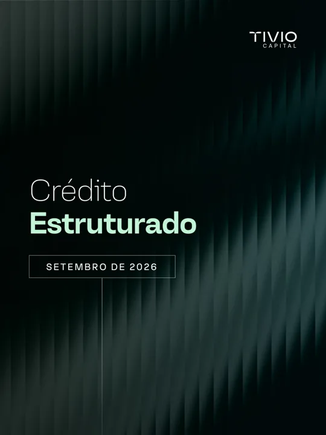
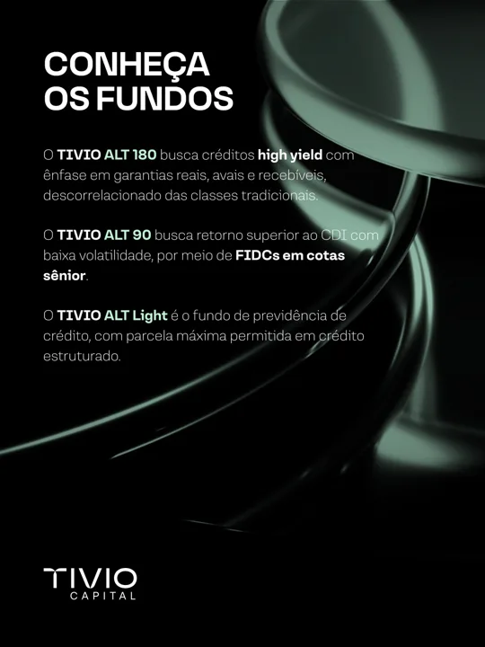
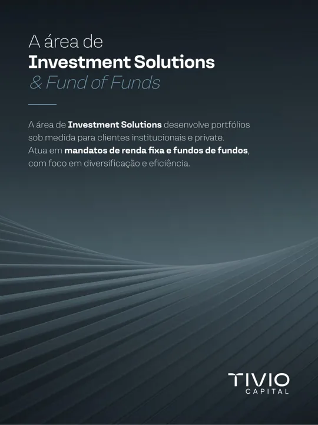

Casa de estruturados
O foco de 2027: quem pensa em crédito estruturado e FIDC no Brasil lembrar da Tivio primeiro. Todo segmento publica, mas cada peça aponta para essa ideia.
Prova
A família ALT como vitrineALT 180, ALT 90 e ALT Light com tese, colaterais e alocação real abertos todo mês. A Tivio já faz isso no relatório; vira conteúdo.Gente
Gestores como porta-vozesO que mais engaja hoje é gente da Tivio aparecendo. Dois ou três gestores de estruturados postando toda semana no LinkedIn pessoal.Dado
Um panorama próprio de estruturadosEstudo trimestral de FIDCs e crédito estruturado com dados da casa. Gera imprensa, e a imprensa alimenta as respostas das IAs.Encontro
16 eventos Itaú no escritórioCada evento com landing de inscrição, conteúdo antes e depois, e contato do participante entrando na base.Plano de posts por segmento
Cadência de um mês típico. O carrossel de Destaques de cada segmento já sai pronto do AutomaTivio; o resto é o que entra em volta dele.
Crédito Estruturado · foco do ano
Mostrar como a casa estrutura, não só quanto rendeu


- Semana 1Carrossel Destaques do mês da família ALT (sai do AutomaTivio), com a alocação real em treemap.Vídeo curto 45 segundos do gestor comentando o mês, cortado do resumo que já é gravado.
- Semana 2Post do gestor Uma operação explicada: o que é a cota sênior, qual o colateral, por que entrou na carteira.Glossário "Tivio Explica": subordinação, sobrecolateral, cessão de recebíveis.
- Semana 3Dado próprio Um número do panorama de estruturados, com gráfico.Bastidor Visita a originador ou comitê de crédito, sem expor nome de cliente.
- Semana 4Evento Chamada para o próximo encontro Itaú, com link da landing.Imprensa Entrevista ou citação do gestor na mídia.
Leva para a landing da família ALT, com formulário para assessor e investidor.
Abrir página de Crédito EstruturadoCrédito Privado
Leitura de mercado com cara de gente


- Semana 1Carrossel Destaques do mês dos fundos de crédito (sai do AutomaTivio).Vídeo curto O gestor resume o mês em 45 segundos. Substitui o post de desempenho em texto, que teve 5 reações em setembro.
- Semana 2Mercado de Crédito Spreads do mês em um gráfico (a tabela ANBIMA já entra no relatório).
- Semana 3Carta do Gestor Um trecho com a ideia principal e o link da carta.
- Semana 4Ponte Como o crédito privado conversa com os estruturados da casa.
Leva para a página de cada fundo e a Carta do Gestor.
Abrir página de Crédito PrivadoInvestment Solutions
Curadoria de gestores explicada


- Semana 1Carrossel Destaques da família Top Gestor (11 páginas, sai do AutomaTivio).
- Semana 2Carta do Gestor Corte da carta de Investment Solutions (a de "O Cálculo de Tolstói" foi a segunda mais curtida do LinkedIn).
- Semana 3Como escolhemos O processo de seleção de gestores, em uma peça.
- Semana 4Previdência Itaú Prev Low Vol e Prev Top Credit para quem já tem previdência no Itaú.
Leva para a página da família Top Gestor.
Abrir página de Investment SolutionsPrevidência
HGD30 e HYD60 para quem planeja longo prazo
- Semana 1Card do mês Rentabilidade de HGD30 e HYD60, com o link da página Saiba mais (já gerada pelo AutomaTivio).
- Semana 2Áudio O resumo em áudio da Saiba mais vira corte para Reels e LinkedIn.
- Semana 3Educação PGBL ou VGBL, portabilidade, prazo: um tema por mês.
Leva para as páginas Saiba mais do HGD30 e do HYD60.
Abrir página de PrevidênciaMarca e eventos
A Tivio como lugar de encontro do mercado de estruturados
- Antes do eventoConvite Tema, data, quem fala e o link de inscrição. Uma semana e um dia antes.
- No diaStories Bastidor curto e foto da sala cheia.
- DepoisResumo Três ideias do encontro em carrossel e o corte do melhor trecho em vídeo.
- Todo mêsInstitucional Big numbers da casa, imprensa e prêmios.
Leva para a landing do próximo evento.
Abrir página de Marca e eventos16 eventos Itaú no escritório
Um evento a cada três semanas, mais ou menos. Cada um segue o mesmo roteiro, para que vire captação e não só presença.
- 3 semanas antesTema ligado a estruturados, landing com inscrição (nome, e-mail, perfil: assessor, investidor, institucional) e convite para a base Itaú.
- 1 semana antesPost do gestor que vai falar, lembrete por e-mail e LinkedIn.
- No diaCheck-in pela lista da landing, foto, vídeo curto e o material do mês impresso ou por QR.
- Até 2 dias depoisE-mail de agradecimento com o resumo e o material, post de resumo e contato quente para o comercial.
- No fim do mêsQuantos se inscreveram, vieram, abriram o e-mail e pediram contato. É o número que prova o evento.
| Trimestre | Eventos | Tema sugerido |
|---|---|---|
| 1º tri | 4 | Panorama de estruturados para 2027; como ler um FIDC |
| 2º tri | 4 | Família ALT por dentro; crédito privado e juros |
| 3º tri | 4 | Previdência de longo prazo; curadoria de gestores |
| 4º tri | 4 | Balanço do ano em estruturados; perspectivas para 2028 |
Captação por landing page
Uma landing por objetivo, com tráfego que chega de dois jeitos. O que a pessoa preenche vai para a base, e cada contato carrega de onde veio.
Orgânico
- Posts por segmento com link na landing
- Gestores no LinkedIn pessoal
- SEO nas páginas de fundo e no blog
- GEO: conteúdo que as IAs conseguem citar
- Newsletter mensal
Pago
- LinkedIn Ads por cargo (assessor, family office, RPPS e fundos de pensão)
- Google Ads em termos de FIDC e crédito estruturado
- Meta para eventos e previdência
- Remarketing de quem visitou a landing
Landings
- Família ALT (casa de estruturados)
- Evento Itaú do mês
- Panorama de estruturados (estudo em troca do contato)
- Previdência HGD30 e HYD60
SEO
- Uma página por fundo com tese, público, rentabilidade, risco, gestor e documentos em texto, não só em PDF.
- Termos para disputar: FIDC, crédito estruturado, fundo de crédito privado, previdência crédito privado.
- Liberar no robots.txt a pasta onde estão lâminas e relatórios, hoje bloqueada.
GEO
- Redes, sites corporativos e imprensa somam 65,9% das citações das IAs no Brasil: o porta-voz na imprensa conta.
- Perguntas e respostas nas páginas ("o que é um FIDC", "como funciona o ALT 180").
- Dados estruturados da organização e dos fundos, e um llms.txt simples.
Agentes no Copilot
A empresa já usa o Microsoft Copilot. Estes agentes podem ser montados no Copilot Studio, lendo os arquivos do SharePoint e do Teams do time.
Relatório de marketing 2027
{{SUB}}
Tivio Capital · Comunicação & Marketing. Planos em construção; números das redes de 28/10/2026.